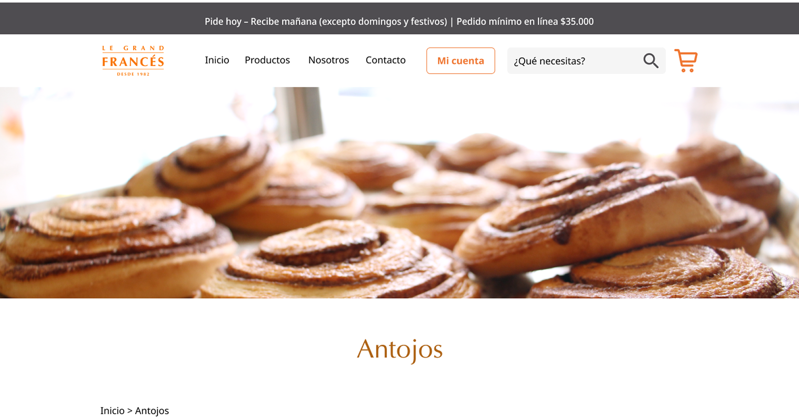
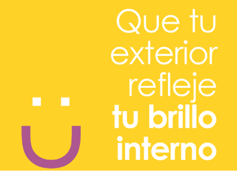
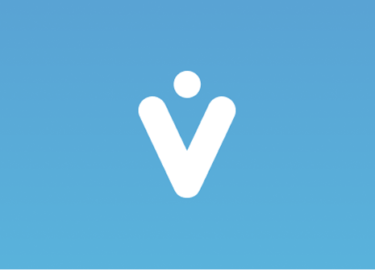

Planteamiento:
Diseñadora Gráfica con más de 10 años de experiencia, 6 de ellos trabajando para la industria del la tecnología y el software. Experticia en diseño de identidad corporativa, diseño gráfico para redes sociales, edición de video, diseño para campañas de email marketing y diseño de landing pages. Mis responsabilidades han estado enfocadas en diseñar e implementar soluciones gráficas para comunicaciones internas y externas, que generen un alto impacto en las organizaciones. Me destaco por mi alta capacidad de escucha, lo que me permite capturar las ideas y realizar propuestas visuales que sean acordes a la necesidad de comunicación que se desea suplir.
Proceso:
Diseñadora Gráfica con más de 10 años de experiencia, 6 de ellos trabajando para la industria del la tecnología y el software. Experticia en diseño de identidad corporativa, diseño gráfico para redes sociales, edición de video, diseño para campañas de email marketing y diseño de landing pages. Mis responsabilidades han estado enfocadas en diseñar e implementar soluciones gráficas para comunicaciones internas y externas, que generen un alto impacto en las organizaciones. Me destaco por mi alta capacidad de escucha, lo que me permite capturar las ideas y realizar propuestas visuales que sean acordes a la necesidad de comunicación que se desea suplir.
Resultado:

